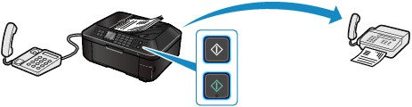
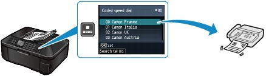
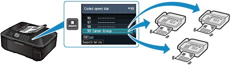
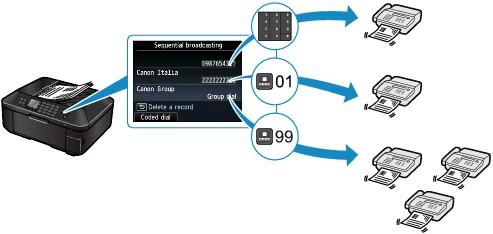

You can send a fax in various ways as follows.
For details, refer to the on-screen manual: Advanced Guide.
 Sending a Fax after Speaking on Telephone
Sending a Fax after Speaking on TelephoneYou can send a fax manually after speaking on telephone if you want to talk to the recipient before sending a fax, or if the recipient has a fax machine that cannot receive fax automatically. You can dial with the telephone connected to the machine.

Sending a Fax with Easy Operation by Registering NumbersIf you register a frequently dialed fax/telephone number or group of numbers to a coded speed dial or a group dial, you can dial the number or group of numbers by searching for and selecting its coded speed dial or registered name.
 Coded speed dial
Coded speed dialIf a recipient's name and fax/telephone number are registered to coded speed dial, you can initiate a call or fax to that recipient by selecting its coded speed dial code or registered name.

Group dialIf two or more recipients' fax/telephone numbers are registered to a coded speed dial as a group, you can send the same original to all the recipients in the group just by selecting its coded speed dial code.

 Note Note
Select Search tel no. to enter the first letter of a registered name. The recipient's name beginning with that letter will appear. Select Coded dial to enter a coded speed dial code. The recipient with that code will appear.
For details, refer to the on-screen manual: Advanced Guide. |
Sending Same Documents to Several Recipients (Sequential Broadcasting)You can send the same documents to two or more recipients with one operation. The recipients can be specified with the Numeric buttons, coded speed dial, and group dial in combination.

| Note Using information services
|